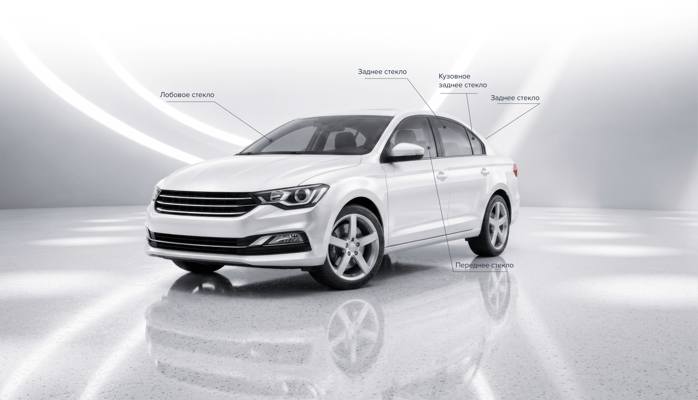

пн-сб: 9:00 - 18:00


ул. Суздальская, 70
423 - 69 - 61
пн-сб: 9:00 - 18:00
ул. Окская Гавань, 3, стр.3
+7 (920) 071-27-21

АВТОСТЕКЛОМАРКЕТ — Профессиональный подбор и установка автостекол
Компания «АвтоСтеклоМаркет» предлагает автомобильные стёкла для отечественных и иностранных автомобилей, профессиональный подбор, продажу и установку. Более 10 лет опыта наших специалистов позволяют быстро подобрать подходящее стекло и выполнить качественную вклейку. В ассортименте — около 8 200 наименований от российских и иностранных производителей. На продукцию и работы предоставляется гарантия.
Стаж работы
Работаем с автомобильными стёклами более 10 лет — знаем особенности подбора и установки для разных автомобилей.
10+
лет работы нашей компании
Выбор стекла
Около 8 200 наименований автостёкол для отечественных и иностранных автомобилей — подберём подходящий вариант для вашей машины.
8 200+
марок стекла

Замена стекол ~ 2 часа
Ремонт всех стекол 30-40мин
При записи онлайн - скидка 7%